Many connections
Files are split into parts that download together and resume after a cut or a restart.
Barq DM brings the same look and the same speed to Windows, with a browser extension that takes your downloads.

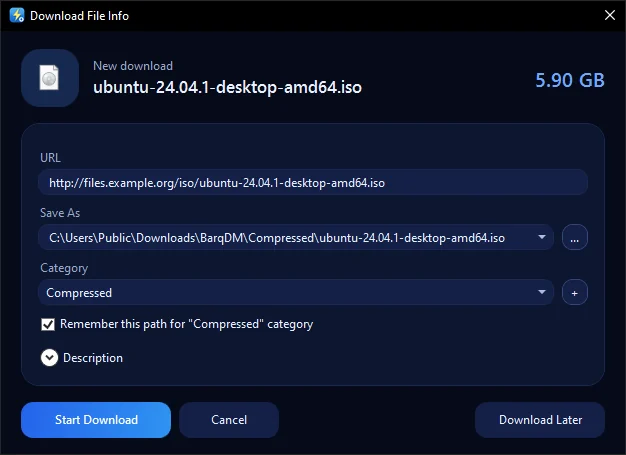
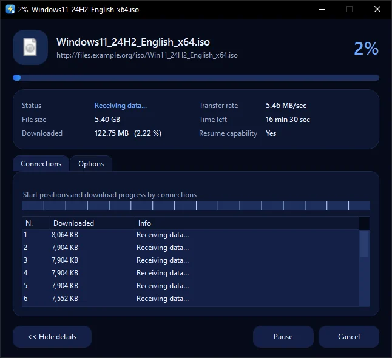
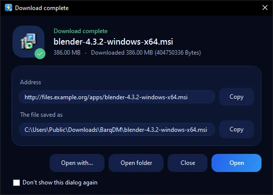

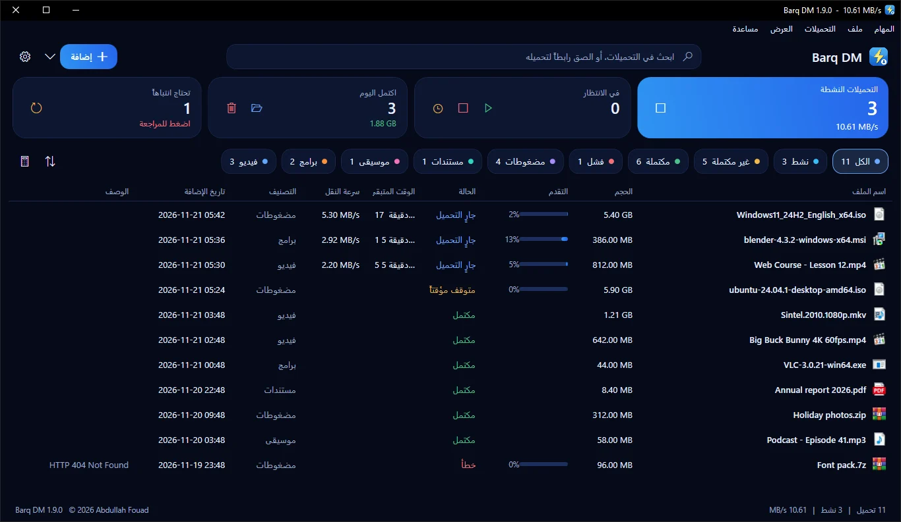
Live speed and active downloads on top, coloured filters with counts, and a search box that also takes a link: paste it and the download starts.
Paste a link (or let the browser extension send it): Barq DM shows the name, the size and the category, and puts the file in the right folder.
Every file is split into up to 32 parts that download together. You see each connection, the speed and the time left, and you can pause and resume at any time.
When a download finishes, a small window lets you open the file or its folder straight away, or copy the link.
Light and dark follow Windows by default, and the accent colour can follow Windows too or be your own.
The whole program is in English and Arabic, and the layout flips to right-to-left on its own.
Barq DM has two faces. Barq looks like the Android app: tiles, filters and cards. Classic is the well-known table with menus, a toolbar and a category tree. Downloads, queues and settings are the same in both.
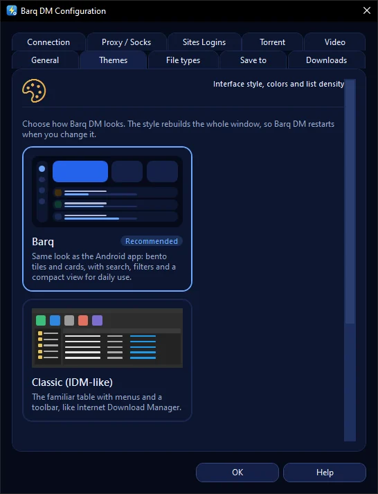
The Barq DM extension for Chrome, Edge and Firefox comes with Barq Shield. It blocks ads, trackers and pop-ups on every site, and hides the empty boxes they leave behind.
To turn it on: click the Barq DM button in the browser toolbar, open the Shield tab and press the power button.
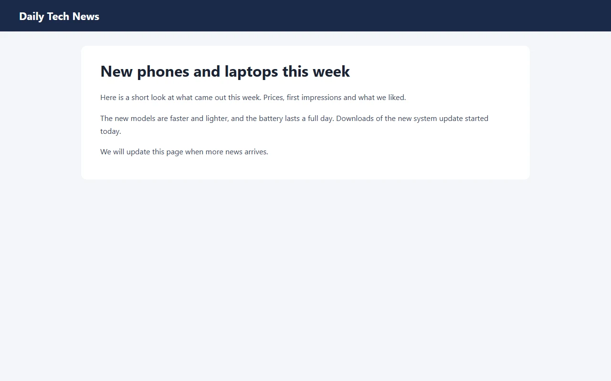
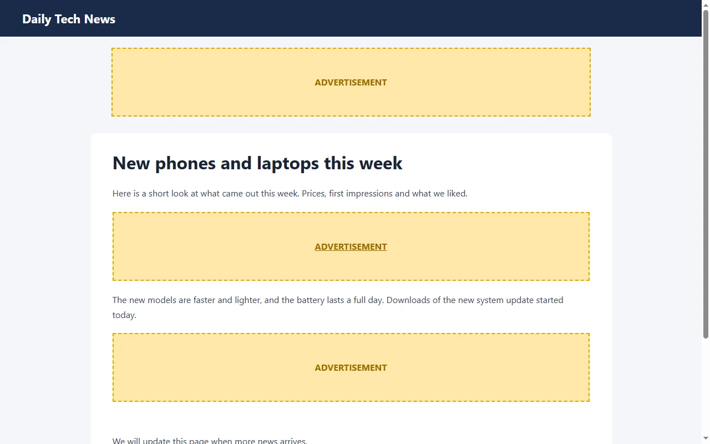
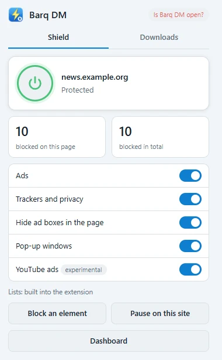
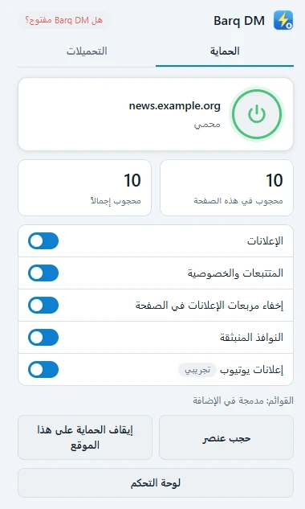
Files are split into parts that download together and resume after a cut or a restart.
For Chrome, Edge and Firefox: Barq DM takes the downloads, the videos and the magnet links of the page.
Ads, trackers and pop-ups blocked in the browser with 9 filter lists that update themselves.
Videos from popular sites in the quality you pick, magnet links and .torrent files.
Start downloads at night, limit the speed, and let Barq DM shut the PC down when it is done.
Barq DM checks for new versions once a day and installs them after you agree, checked with SHA-256.
Installer or portable copy. Windows 10 and 11, 64-bit.
Pair Barq on Android with Barq DM on Windows once. On the same Wi-Fi, send links to the PC and bring finished files back to the phone.
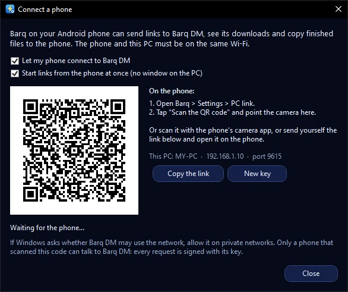
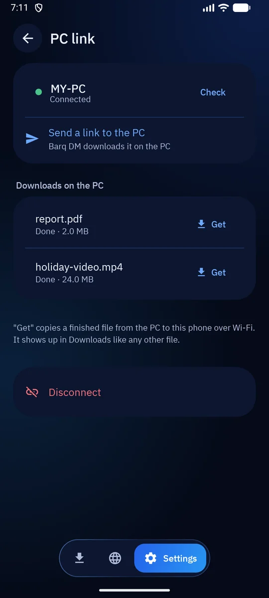
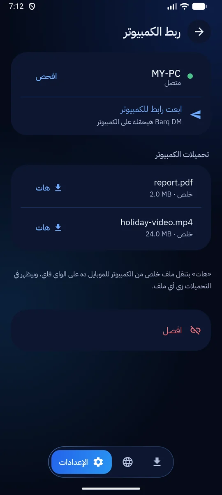
On the PC open Tasks > Connect a phone. On the phone open Settings > PC link and scan the code. That is all, once.
Found a big file on the phone? Tap "PC" in the share window or "Send to" in the + sheet, and Barq DM downloads it on the PC.
See the PC's downloads live, and tap "Get" on a finished file to copy it to the phone over Wi-Fi, with resume.
Safe by design: only the phone that scanned the code can talk to Barq DM, every request is signed with its key, and nothing leaves your Wi-Fi.